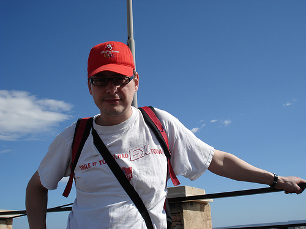

|

|
Prof. Martin Speight |
| E-mail: | j.m.speight"in"leeds.ac.uk, where "in" is replaced by the usual symbol |
| Telephone: |
(0113) 343 5169 |
| Office: | 9.11 |
| Postal address: |
School of Mathematics, University of Leeds,
Leeds LS2 9JT, UK. |
| Department: |
Pure Mathematics |
| Research Group: |
Differential Geometry |
|
|